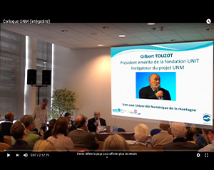
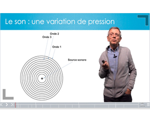
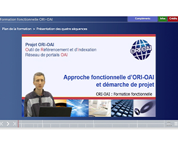
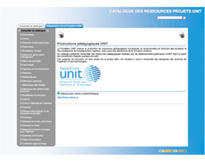
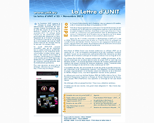
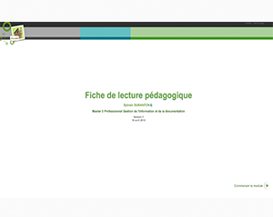

Colloque « Université Numérique de la Montagne et des Territoires Isolés »
Enregistrement en direct des interventions en binôme avec un personnel INES EDUC. Réalisation de la vidéo finale (montage avec FinalCutPro X, habillage graphique avec Motion, compression pour le Web), upload Youtube et diffusion des interventions depuis un outil ENT (Agora project)
Lire la suite →

Conception de modules e-learning sur l'aviation
Réalisation de 2 modules multimédia de vulgarisation scientifique et de promotion des carrières scientifiques et techniques (autour du thème de l'aéronautique) En collaboration avec 2 membres-conférenciers de l'IESF Savoie Mont-Blanc (Société des Ingénieurs et Scientifiques de France).
- Réalisation d'une maquette à partir de la chaine éditoriale Scenari et le modèle documentaire Webmedia
- Tournages en studio sur fond vert
- Postproduction
- Intégration et diffusion Web
Lire la suite →

Réalisation d'un module de formation à ORI-OAI
Création d'un module e-learning consacré au système logiciel ORI-OAI (Outil de Référencement et d'indexation - Open Archive Initiative). Conduite de projet en binôme avec un personnel de l'Université de Valenciennes, formateur attitré pour les formations fonctionnelles à l'outil.
Lire la suite →

Catalogue ressources projets UNIT
Conception d'un catalogue numérique de l'offre projets UNIT à partir des fichiers de livrables transmis. Utilisation du modèle documentaire Optim de la chaine éditoriale Scenari et usage de l'outil Scenari Styler pour designer un habillage graphique
Lire la suite →

Lettre d'information UNIT
Production d'une lettre électronique d'information sur l'actualité de la communauté UNIT et traitant de sujets liés à la pédagogie dans l'enseignement supérieur.
Lire la suite →

Fiche de lecture pédagogique
Réalisation d'une fiche de lecture commentée avec la chaine éditorilae Scenari en utilisant le modèle documentaire OpaleSup et l'habillage graphique "Skin Bulles"Rendu de devoir dans le cadre du cours " Chaînes éditoriales XML : Théorie, pratique, application au e-learning" dans l'UE Projet tutoré du master 2
Lire la suite →